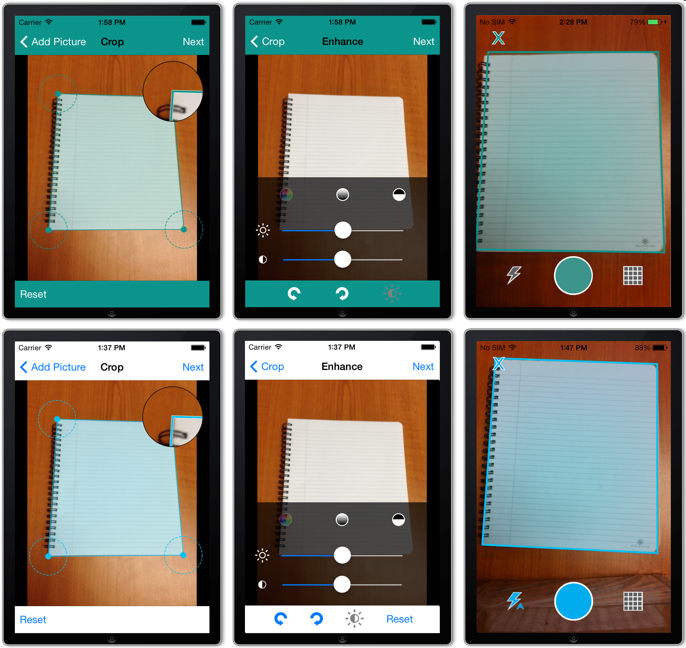

#import <SimpleECM Image Processing SDK/SECM_Image_Processing.h>
NSData *license = [NSData dataWithContentsOfFile:[[NSBundle mainBundle] pathForResource:@"licenseFile" ofType:@""]];
NSData *signature = [NSData dataWithContentsOfFile:[[NSBundle mainBundle] pathForResource:@"licenseFile" ofType:@"signed"]];
[SECMLicense verifyLicense:license withSignedLicense:signature];
Note: If you don't verify the license, the SDK won't apply any of the operations to the images
SECMCaptureDocumentWizardBuilder *builder = [[SECMCaptureDocumentWizardBuilder alloc] init];
@property (nonatomic, strong) UIColor *navigationBarBarTintColor;
@property (nonatomic, strong) UIColor *navigationBarTintColor;
Note: the wizard will set the UINavigationBar's barTintColor property regardless of the iOS version the user is running. If you're supporting iOS 6, do not set the barTintColor properties in the builder.
builder.delegate = self;
UIViewController *wizard = [builder createDocumentWizardController];
[self presentViewController:wizard animated:YES completion:^{}];
- (void)documentBuilderDidClose:(SECMDocumentBuilder *)builder deleting:(BOOL)deleting;
The deleting flag will specify if the user wants to delete the document.
- (void)documentBuilderDidFinish:(SECMDocumentBuilder *)builder;
You can obtain the captured images by using the SECMDocumentBuilder's methods:
//Build a pdf with all the enhanced images
- (void)buildPDFDocument;
//Obtain the built pdf
- (NSData *)PDFDocument;
//Access each image individually using the following methods
//returns the number of images
- (NSUInteger)numberOfImages;
//returns the enhanced image (with brightness and contrast, and rotation applied)
- (UIImage *)enhancedImageAtIndex:(NSUInteger)index;
Note: It is your responsibility to dismiss the wizard by calling -[UIViewController dismissViewControllerAnimated:completion:]
/**
Adjust the brightness and contrast of an image. Modifies the current SECMImage object.
@param float brightness the brightness modifier. Range goes from -1.0f to 1.0f.
@param float contrast the contrast modifier. Range goes from 0.0f to 2.0f.
*/
- (void)adjustBrightness:(float) brightness andContrast:(float) contrast;
/**
Converts the image to black and white. Modifies the current image object.
*/
- (void)convertToBlackAndWhite;
/**
Converts the image to grayscale. Modifies the current SECMImage object.
*/
- (void)convertToGrayScale;
/**
Rotates the image to a fixed angle. Modifies the current SECMImage object.
@param SECMImageRotation rotation the desired rotation. Options are available in SECMImageRotation.
*/
- (void)rotateFixed:(SECMImageRotation)rotation;
/**
Rotates the image. Modifies the current SECMImage object.
@param float degrees the rotation angle
*/
- (void)rotate:(float)degrees;
/**
Dewarps a quadrangle in the image
@param SECMQuadrangle *quadrangle the quadrangle to be dewarped
*/
- (void)dewarpWithQuadrangle:(SECMQuadrangle *)quadrangle;
The SECMImage object is mutable, and applying the image operations on it will change its contents.
extern NSString * const SECMImageOperationOutputImage; ///< Key to obtain the resulting image from the results dictionary
extern NSString * const SECMImageOperationName; ///< Key to obtain the operation name from the results dictionary
//For the adjust brightness and contrast operation
extern NSString * const SECMImageOperationBrightness;///< Key to obtain the brightness modifier in the results dictionary
extern NSString * const SECMImageOperationContrast;///< Key to obtain the contrast modifier in the results dictionary
//For the fixed rotation operation
extern NSString * const SECMImageOperationFixedRotationValue;///< the desired fixed rotation angle
//For the rotation operation
extern NSString * const SECMImageOperationRotationAngle;///< the rotation angle
//For the dewarp operation
extern NSString * const SECMImageOperationQuadrangle;///< the quadrangle to be dewarped